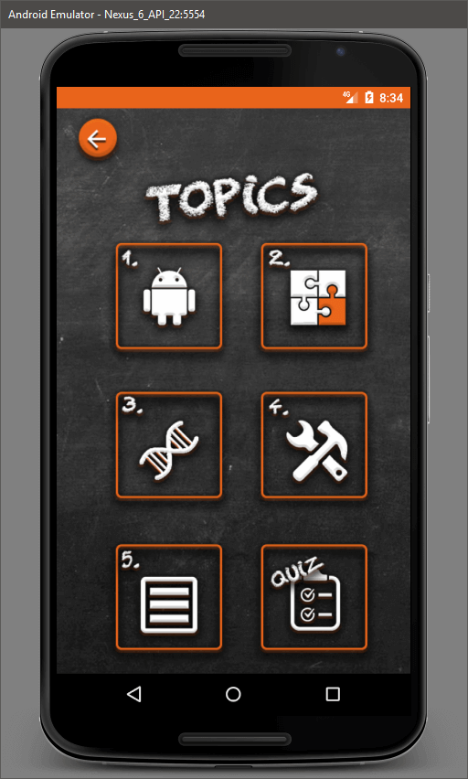
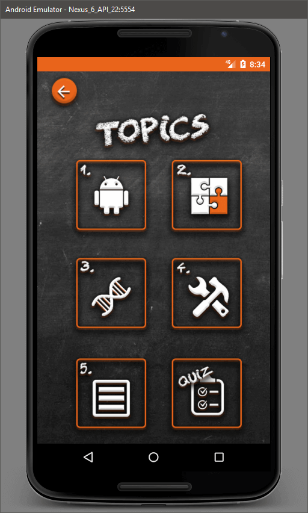

Aim:
Mobile application has become a dominating market in the computing industry, with thousands of apps whether they be gaming/social or personal being produced every single day.
The market has become a leading industry in new technologies by producing efficient and compact applications on target hardware that would otherwise be ignored on personal computers or consoles.
During my time at University I was tasked with creating an app that will teach the user a form of android programming by utilising a series of topics that will later have a quiz for the user.
This quiz will be used to test the user on what they have learnt through the app whilst giving them a score to track their progress and give a competitive edge to using the app.
Time Period:
Given this project was an assignment at university the completion time was very strict with no extensions. Whilst juggling other projects due the project took around 3 months to complete.
App Structure
The app was heavily designed around simple button movements for maximum user interaction efficiency, whilst also being clean and sharp as to not overwhelm the user. This idea of not overwhelming the user is a very high priority due to the nature of learning subjects and too much information at once can either deter or confuse many people. Thus, an ideal balance of text to images is needed to help breakdown this barrier.
The main design of the app was themed around education. Thus, a chalkboard effect was used to give it the idea of education, whilst using a vibrant orange tone to break away from the dark blackboard background. This in turn was used with a chalk style writing like how a normal chalkboard is used to finish off the design.
Finally, the app also features a pop up window for the help screen to help keep the app a little more efficient and is easier than transitioning to anew activity for a small amount of information that would be useful to a user.

Design Flow:
When designing the concept for the mobile application a flow chart was needed to define the steps you would take to move around the application. After a few revisions, the following image demonstrates the route taken, defining easy access back to the home screen with a single button press from anywhere in the app.

Screenshots
 
